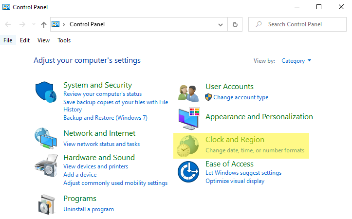
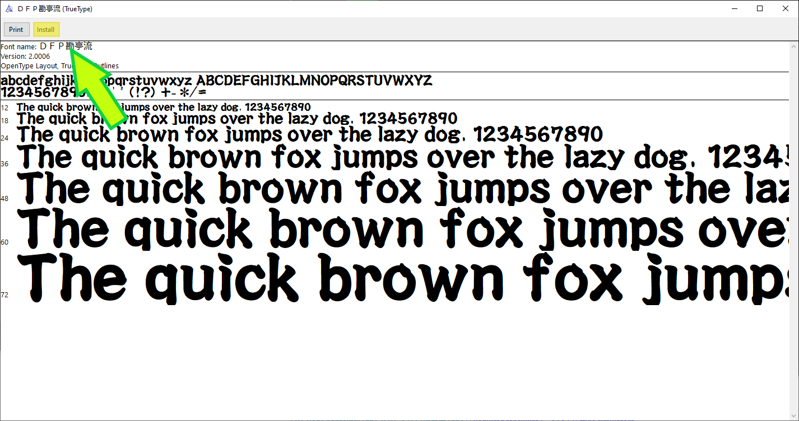

Bem-vindo ao Guia do Simulador Taiko no Tatsujin (太鼓の達人)
Pre-requisitos
Todos os simuladores têm certos requisitos e instalações necessários antes que possam ser executados corretamente.
Como alterar a localidade do seu sistema
Isso NÃO mudará o idioma exibido no seu sistema!
Qual é a localidade do seu sistema?
A localidade do sistema é como o computador exibe texto não unicode nos programas.
Porque eu preciso mudar?
Para exibir texto em japonês, que é um requisito para simuladores, sua localidade precisa ser definida como japonesa para que seu computador possa analisar músicas com nomes japoneses e carregar qualquer áudio de música.
This process is slightly different for Win7/WinXP.
- Vá para o seu Painel de Controle no Windows, usando a barra de pesquisa ou usando o atalho no menu do Windows.
- Em seguida, vá para a guia Relógio e região.
- Selecione Região e clique no painel "Administrativo".
- Clique no botão "Alterar localidade do sistema..." e selecione "Japonês (Japão)". NÃO clique na marca de seleção abaixo!
- Reinicie o computador e pronto!


Instale as fontes Taiko no Tatsujin
Seu computador não vem com as fontes necessárias usadas na maioria dos simuladores modernos, então elas precisam ser instaladas manualmente.
-
Baixe as fontes necessárias.
- Dom Casual Std + DFPKanteiryu-XB (DFB勘亭流-XB) | Required for TJAPlayer3
- FOT-Ōedo Kanteiryu Std E (FOT-大江戸勘亭流 Std E) | Required for Nijiiro (ニジイロ) style simulators
- DFPKanteiryu-XB (DFB勘亭流-XB) | Required for any other simulator
-
Clique duas vezes no arquivo de fonte para instalar.
 -
Em certos simuladores TJAPlayer3, é necessário especificar a fonte. Em config.ini, mude:
FontName=ＤＦＰ勘亭流para fonte normal e inglês híbrido
FontName=FOT-大江戸勘亭流 Std Epara fonte Nijiiro
Nenhuma reinicialização é necessária após a instalação da fonte.
Para a fonte taiko padrão, foi adicionada compatibilidade extra para selecionar músicas. Para habilitar essa compatibilidade, os nomes das músicas no arquivo TJA devem ser alterados.
!? = ⁉
?! = ⁈
⒑ = 10
⒒ = 11
⒓ = 12.5
⒕ = 14
Ⅼ = LO
Ⅾ = DY
‼ = !!
‽ = !!!
❢ = !!!!
there is one for !!!!!
℣ = vs
♢ = poxei doon diamond
：= :
🐠 = a fish in taiko font
ﻼ = a dolphin in taiko font
Como Obter Musicas
Encontrar músicas pode ser complicado, especialmente para pessoas que não falam ou lêem japonês. Este guia fornece fontes confiáveis para encontrar gráficos de boa qualidade (TJAs) e áudio. Certifique-se de que seu simulador está funcionando antes de baixar músicas.
TJADB (Recomendado)
O TJADB é a maneira mais atualizada e eficiente de encontrar áudios e gráficos da mais alta qualidade, principalmente para músicas oficiais. As músicas personalizadas também estão incluídas em um canal de envio de usuários separado.
No momento em que escrevo isso, o projeto ESE (Every Song Ever) está completo e inclui TODOS os mapas e músicas oficiais de taiko. Você pode encontrar o TJADB no Discord aqui.
Para músicas personalizadas de alta qualidade, visite https://dev.pidgey.net para obter o banco de dados TJADB personalizado completo.
GetUploader
GetUploader, também conhecido como "uploader.jp" ou "ux.getuploader.com", é onde muitos criadores e usuários japoneses de TJA enviam seus trabalhos online. As fontes daqui podem ser de qualidade variável, e a grande maioria delas é personalizada.
.
As músicas também podem ser encontradas usando o GetUploader acessando o Google e usando o formato "nome da música" + site:getuploader.com.
Outras fontes
As músicas podem ser encontradas em outros lugares na web, como taikosanjiro-humenroom, que apresenta Oni (ou Omote (表)) e Ura (裏) paradas personalizadas e oficiais. Qualquer coisa além disso pode ser encontrada com o google e o termo 太鼓さん次郎 + "Nome da música".